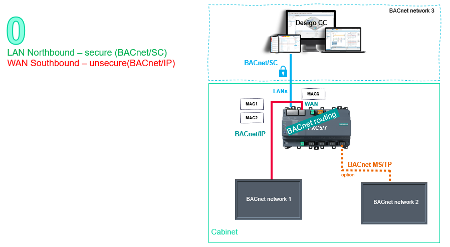
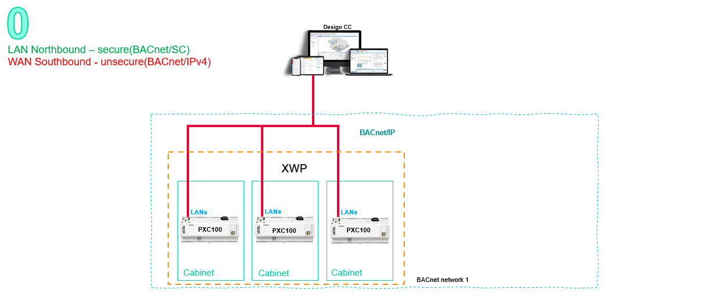
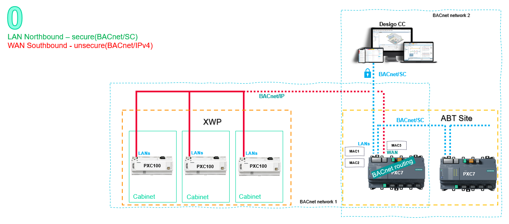
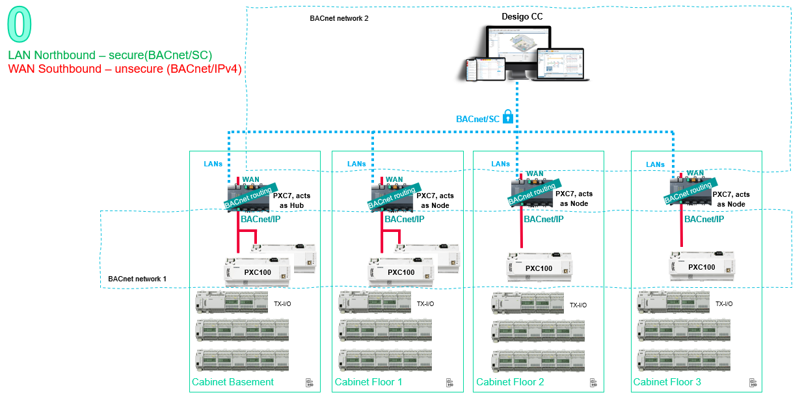
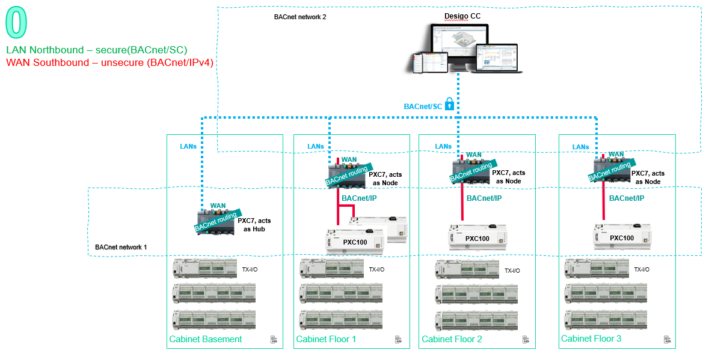
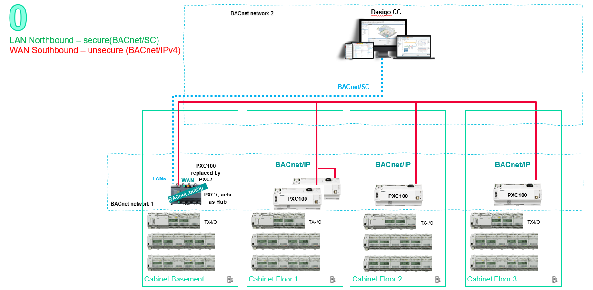

场景 0：不同以太网端口上的两个 BACnet 网络
Separate BACnet/SC and BACnet/IP traffic
BACnet 网络在逻辑上进行路由且物理上分离，但需要 BACnet 路由才能在以太网端口之间进行通信：您可以在 WANs 和 LANs 上操作 BACnet/IP，但 /SC 必须在 LAN 上操作，从而将安全与不安全的 BACnet 流量分开。


WAN 端口具有未加密的 BACnet/IP 流量，不适用于外部网络访问。
Case 1: Project extension with BACnet/SC communication
使用 Desigo CC 中的扩展：通过 WAN 端口将 BACnet/IP 网络从现有设备路由到 PXC5/7 设备，并通过 LAN 端口 1A 上的 BACnet/SC 网络路由到 Desigo CC。使用 LAN 端口 1B 连接到其他自动化站。
- Project before the extension

- Project after the extension

Security aspects:
- The BACnet/SC network ensures a high level of network security in the extended project area.
- Locked and controlled cabinet access protects the residual (and unsecure) BACnet/IP network.
Engineering and customer data:
- No additional graphical or data engineering is required for Desigo CC; existing data for trends, alarms, logs, etc. are not lost.
- Set up and operate the new BACnet/SC network.
- No additional engineering required for PXC00 ... PXC200 devices with Xworks Plus (XWP). Configure the PXC5/7 WAN port to use BACnet/IP and the LAN port to use BACnet /SC.
Financial aspects:
- Sets the groundwork for subsequent migration to PXC7 devices.
Case 2: Improve the network security outside the control cabinet
在控制柜顶部安装 PXC7 设备，并通过新设备路由柜内的所有流量。旧设备仍然直接相互通信 /IP。旧设备通过 BACnet/IP 连接到 PXC7，集线器直接连接到 Desigo CC。

Security aspects:
- The BACnet/SC network provides a high level of network security.
- A locked and controlled cabinet physically secures the unsecure BACnet/IP network from eavesdropping.
- Disable unused Ethernet ports.
Engineering and customer data:
- No additional engineering is required for Desigo CC. Only BACnet/SC must be configured on Desigo CC.
Financial aspects:
通过用 PXC7 替换设备来保护您的投资：
- The PXC housing is the same size as the PXC100 ... PXC200.
- The Island bus connection is the same as the PXC100 ... PXC200
PXC5.E003 不能用于这种情况 (WAN)，并且 PXC5.E24 外壳大于 PXC100 … PXC200。
Case 3: Replace existing PXC100 ... PXC200 devices with new PXC7 devices
将现有 PXC100 ... PXC200 设备替换为 PXC7 设备。地下室的PXC7作为集线器（地下室机柜），PXC5/7设备作为连接集线器的节点添加到1-3层的机柜中。旧设备通过 BACnet/IP. 与节点和集线器通信，这需要对 Desigo CC 进行额外的重新设计。

Security aspects:
- The BACnet/SC network provides a high level of network security.
- Disable unused Ethernet ports.
- A locked and controlled cabinet physically secures the unsecure BACnet/IP network from eavesdropping.
Engineering and customer data:
- The new application concept for the PXC7 control program requires re-engineering.
- Desigo CC data, such as trends, alarm routing, logs, etc. must be migrated for this device.
- New graphics required to replace existing Desigo CC graphics for this device.
Financial aspects:
- Existing TX-I/O’s can be used (no new wiring required).
- The costs of the new application program and commissioning must be considered in the bid.
- Desigo CC data must be migrated, and the costs considered in the bid.
Case 4: Replace an existing PXC100 ... PXC200 device with a new PXC7 device
将现有的 PXC100 ... PXC200 设备替换为 PXC7 设备（例如，在地下室），并将其他楼层通过 BACnet/IP 路由到集线器。通过 BACnet/SC (LAN 1A) 将通信路由到 Desigo CC（需要在 Desigo CC 中进行额外的重新设计）。 1-3层的柜子保持不变。

Security aspects:
- The BACnet/SC network provides a high level of network security.
- Disable unused Ethernet ports (here the WAN port).
- The BACnet/IP network to cabinets on floor 1-3 are unsecure (same as before).
- A locked and controlled cabinet physically secures the unsecure BACnet/IP network from eavesdropping. Note: Cable outside of the cabinet are not secure and is in responsibility of the customers installation.
Engineering and customer data:
- The new application concept for the PXC7 control program requires re-engineering.
- Desigo CC data, such as trends, alarm routing, logs, etc. must be migrated for this device.
- New graphics required to replace existing Desigo CC graphics for this device.
Financial aspects:
- Existing TX-I/O’s can be used (no new wiring required).
- The costs of the new application program and commissioning must be considered in the bid.
- Desigo CC data must be migrated, and the costs considered in the bid.